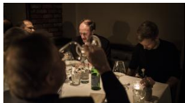
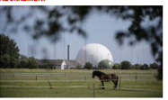

Gas er et godt politisk våben. Det er bare ikke Putin, der bruger det
Nogle EU-lande frygter, at Rusland kan bruge Nord Stream 2 som politisk våben mod Europa. Men ivirkeligheden er det omvendt, mener firmaerne bag rørledningen: Det er EU, der bruger gassen som våben over for Putin. Information har været på charmetur med den russike gas' europæiske venner

>>Jeg tænker, at vi lige taler os varme sammen, før vi begynder på interviewet, << siger Jens Müller, talsperson for det russike gasfirma Nord Stream 2 AG. VI sidder en gruppe journalister i en bus på vej til en gasterminal i
Rotterdamn, inviteret af folkene bag den kommende russike gasrørledning. Nord Stream 2 (NS2), der efter planen skal krydse dansk farvand
Vores abonnenter kalder os kritisk, seriøs og troværdig. Se om du er enig...
Allerede abonnent? Log ind herFik du læst?
Alternativ forbrødring, eller hvordan jeg lærte at holde op med at bekymre mig og elske jazzhænder
>>Jeg måtte ud på det dybe band for at nå til et nyt land<<

Iceage lever stadig op til den hype, de opnåede, inden de var gamle nok til at flytte hjemmefra
Under normale forhold ville Trumps skandaleramte miljøchef forlængst være blevet bortvist...
Seneste nyt
Information.dk-
16:36
Slut med møntbetaling i københavnske p-automater
-
16:26
Energiminister: Afgift på biomasse er forkert vej at gå
-
15:45
Libanesik premierministers parti går en tredjedel tilbage
-
15:10
Ombudsmand:Offentligheden må se kronprinsens IOC-breve
-
15:02
WFF:Vildsvinehegn skader andre dyrearter i grænselandet
-
14:40
Atomaftale med Iran fortsætter også uden USA
Flere nyheder
Forsiden lige nu
ABONNEMENT
Gas er et godt politisk våben. Det er bare ikke Putin, der bruger det
Mand dig op, Kvinde!
Peter Madsen anker kun lægden af sin straf
Ankesagen mod Peter MadsenKommer kun til at handle om, hvilken straf han skal have
ABONNEMENT

Rapport fra norsk regeringskommission skaber tvivl om lovligheden af FE's masseovervågning
ABONNEMENT
Sådan håndteres offentlige arbejdskonflikter i Sverige og Norge
Den ellers højtbesungne danske model skal revideres, hvis det står til Socialdemokratiets formand, Mette Frederiksen. Ionformation skitserer i den anledning overenskomstmodellerne hos vores nordiske søsternationer. Men måske behøver vi slet ikke se ud over landets grænser for at finde inspiration til justeringer
ABONNEMENT
440.000 syrere er vendt tilbage, selv om krigen fortsætter. VI har fulgt en af dem
Anbefallinger
Kommentarer

Henrik holm hansen
06 maj. 2018 5:56Hvis det forholder sig som skrevet står at Rusland for mest ud af nord stream 2 forstår jeg slet ikke politkerne og måske specielt EU ikke bruger muligheden aktivt til presse endsige fortælle PUTIN at ruslands opførsel i Ukraine ikke kan accepteres kommer der ikke penge i kassen kan obligarkerne ikke fodres!
Gert Romme
07 maj 2018 17:06Jeg skal ikke vurdere, hvem der eventuelt kan finde på at benytte dette våben, der er kammende for civilsamfundet.
Men Rusland har faktisk brugt dette "våben" mere end en gang. Og de vestlige lande med Forbundrepublikken i spidsen er blevet ramt mindst 2 gange.
Og hver gang har Rusland beklaget, og undskyldt sig med, at man ikke kunne ramme Poland (1 gang) og Ukraina (mindst 1 gang), uden at det påvirkede andre aftagelande. Og mindst en gang mente Rusland, at de vestlige aftagerlande burde straffe??? -Ukraina.
I øvrigt så jeg i eftermiddags tidligere SPD-medlem, tidligere Forbundskanzler og tidligere Gerhard Schröder sidde på de fine pladser under Vladimir Putins indsættelses-show. Det var på RT (RussiaToday), der er Vladimir Putins personlige popaganda-kanal der også sikrer "det frie ord" i verden. Det så ud til, det var meget vigtigt for Putin og RT, for der var hele tiden fokus på en tidligere Hr. Schröder.
DU skal være registreret bruger for at kommentere. Log ind eller opret bruger